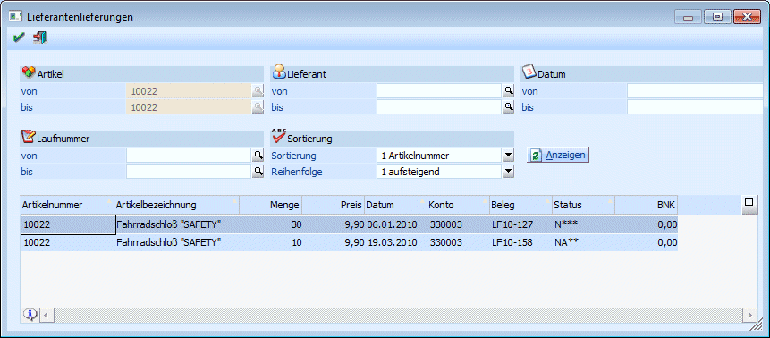

Bei Eingangsbelegen (Lieferantenlieferschein und - faktura) besteht die Möglichkeit die Liefermenge nur auf den Hauptartikel zu buchen. Wenn im Zuge des Verkaufes neue Ausprägungen angelegt werden, kann diese Liefermenge den neuen Ausprägungen zugewiesen werden. Dadurch erfolgt eine automatische Anlage und Zubuchung des Ausprägungsartikels bzw. aufgrund des Verkaufes auch eine Abbuchung (wenn es sich um einen Lieferschein oder eine Faktura handelt). D.h. beim Eingang können z.B. 5 Stück eines Identnummernartikels auf den Hauptartikel zugebucht werden und erst beim Verkauf werden die 5 Identnummern angelegt.
Die Zuweisung geschieht beim Erfassen eines Ausgangsbeleges im Ausprägungsfenster in der Spalte Beleg. Dieses Fenster Lieferantenlieferungen wird geöffnet, wenn nach Belegen mit noch nicht aufgeteilten Hauptartikeln in der Spalte Beleg im Ausprägungsfenster gesucht wird.

Die Anzeige kann nach folgenden Kriterien eingeschränkt werden:
ü Artikel von - bis (Keine Eingabemöglichkeit, wird immer vom Ausprägungsfenster vorbelegt)
ü Lieferant von - bis
ü Datum von - bis (Belegdatum des Eingangsbeleges)
ü Laufnummer von - bis
Die Sortierung kann wahlweise auf- bzw. absteigend und nach…
ü Artikelnummer
ü Datum
… erfolgen.
Mit einem Doppelklick bzw. mit OK kann ein Beleg übernommen werden.